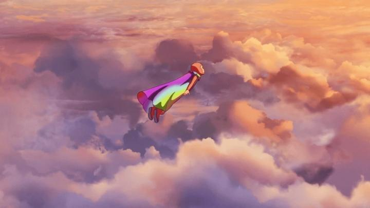
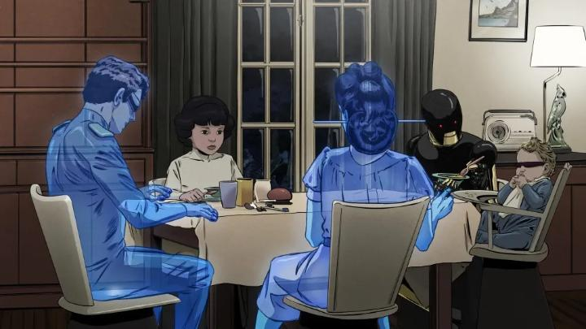

2025 was a good year for animation in France. Two films in particular were getting awards buzz: "Arco" and "Little Amelie or the Character of Rain." The latter never got even a limited theatrical release near me (GKIDS has really gone downhill after discovering the financial success of anime, haven't they?), but "Arco" did eventually (after multiple teases and delays, it finally came out in February 2026). I had waited months to see this film, kept largely under wraps even in its early days at animation business pitch conferences. All we had to go on was a striking poster of a rainbow surrounding the face of a cartoon child. This is a time-travel story across two future eras. In a very distance future, human society lives on elevated platforms in the clouds, in a seemingly peaceful state. And time-travel technology is widely available - the family of young boy Arco regularly uses the special time-travel coats to collect extinct flora to populate them back to their era. Arco himself wants to go (as any child would, he "wants to see the the dinosaurs") but he's too young, and like our driving laws, it's illegal for people under 12 to time travel. Frustrated, Arco sneaks out at night with his older sister's technicolour time coat, and flies through the sky, time and space, experiencing time travel for the first time. He has no control on where he's going, and ends up in the year 2075 (a not too-distant future from us), and with the help of a local girl named Iris, has to repair his coat to try to get back. There's also a bumbling trio of conspiracy theorists on their trail, as the so-called villains / comic-relief. Yes, the themes of global warming and ecological disaster set the landscape of the movie. There's always a risk of this making the story feel instantly dated or preachy. But it's fascinating to see "Arco" succeed to delicately balance this tone. In it's version of 2075, homes are protected under glass domes while frequent storms damage the streets and infrastructure, and increasingly severe wildfires along the horizon become commonplace. You would expect a lot to be pointed out here, and perhaps how time-travel could be used to fix it, but no such suggestion is ever pointed out. Elsewhere, robots and A.I. help manage daily lives to run like clockwork, while humans (including Iris's parents) work out of town and remotely eat dinner with their family through hollogram. The film seems to understand that this future is likely and, increasingly, unavoidable, and is much more interested in the regular everyday humans that live in what they came to know as "normal." Arco's misadventure is a bit childish and simple at first, but in the last third - I was surprised to see so much time still remaining when checking my watch, and didn't know what to expect. There's no revolutionary ending here, but there were a couple surprises that brought a tear to my eye, including the most tragic scene I've seen with an animated robot since "The Iron Giant." Those surprises in what is otherwise an accessible film for all ages are probably the thing that make adult audiences swoon for "Arco," but I can't deny that it works - it's an impressively self-assured film. Whenever a non-American animated family film releases, critics can't help but compare it to Studio Ghibli and Hayao Miyazaki, because their experience with animation is so narrow and shallow that they don't know any better. Yes, there are subtleties that recall Ghibli. The non-preachy ecological message is similar to "Princess Mononoke." The limited-frame animation of birds in the sky is gorgeously simple, inpsired perhaps by shots in "Castle in the Sky." The use of robots is also akin to "Castle in the Sky." Even the three shifty conspiracy agents that are ultimately not mean-spirited, however annoyed they might have made critics, are classic for Ghibli and Disney, and do offer a reprieve to break up potentially dull pacing, and for younger viewers, are essential to keep attention. But these are all grasping at straws to find any correlation. The only clear inspiration is the musical composition, which could stand in perfectly for Joe Hisaishi, and is lovely.

Visually, "Arco" is beautiful, but is simultaneously a mixed bag for me. Environments are impressively detailed. With "rainbows" being such a important icon of the film, it's not afraid to use colour in general, and that enhances the picture. The character designs however... it certainly doesn't look like Ghibli or anime, and is instead much more inspired by French comics. With a cast of mostly children, faces are round, with large lips, and everything largely with realistic proportions. Which doesn't look appealing in a cartoon, and like real people, the faces aren't particularly expressive in animation. Both 2D and 3D tools were confirmed to be used in production, and character animation looks uncannily like 3D animation at times - shape and shadow movement is just a little too consistent, perfect and clean. That's an impressive achievement if it really was 2D animation (even if it was just rotoscoped over a 3D proxy), but it betrays the strengths of why we love 2D animation in the first place - we do see those strengths during the brief time travel sequences or chase scenes, but they are too few. And much was made about the the English voice cast. Natalie Portman co-produced the film, and the English dub includes her, Mark Ruffalo, America Ferrera, plus the comic-relief trio played by Will Ferrell, Andy Samberg, and (of all people) Flea. It's a star-studed cast not unlike what Ghibli's films would command. But French animation, and international animation in general, never quite cracked the universality of lip-syncing that Japanese anime figured out - the voice acting does its best, but is often awkward as it tries to match lip flaps on screen. There's a inspired choice to have both Portman and Ruffalo voice the robot Mikki together at the same time, lending to the robotic echo-like tone of the character - in the French dub, director Ugo Bienvenu himself voices Mikki. Knowing that a French dub exists at all was a surprise, and I'd recommend that first over the English dub. "Arco" is simultaneously overrated and underrated at the same time. It's ultimately a very assured film by first-time director Ugo Bienvenu. If anything, it's the character designs that weakened my appreciation of the movie, but there are still large swaths of people who feel exactly the same about designs in Japanese anime, so to each their own. That it is such an accessible film for both children and adults, and for its fascinating visions of the future to come, it's well worth watching, and could well be a new modern classic. - "Ani" More reviews can be found at : https://2danicritic.github.io/ Previous review: review_Arcadia_of_My_Youth_-_Captain_Harlock Next review: review_Aria_the_Animation